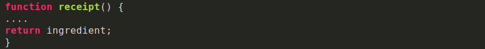

¿Les ha pasado que estan super inspirados escribiendo codigo pero repentinamente necesitan una luz divina que
les diga que
que nombre ponerle a la variable que estan a punto de escribir
Como
frontend, hay tantas cosas que debo nombrar en mi dia a dia:clases para cada elemento HTML, variables
en Stylus que puedan ser reutilizables,componentes,archivos,funciones... Tengo que poner a volar mi imaginacion
para poder lograrlo
A pesar de que es algo que depende totalmente de nosotros y no hay una forma estrictamente correcta o incorrecta
de hacerlo, nombrar cada elemento es un trabajo en el que podemos poner empeño, pues se vera impacta en la
organizacion y mantenibilidad de nuestro codigo
Fanny es part del
Team Platzi.Si quieres una carrera en
Frontend ,empieza por el
curso de desarrollo web y luego
curso de responsive design
Lo mas importante es que el nombre que le asignes siempre refleje el trabajo que esta haciendo, de esta forma
podemos incluso
reducir la necesidad de comentar cada linea de codigo con su funcionamiento
Final continuacion algunos consejos que hay que seguir para evitar algun desastre a la hora de nombrar un
elemento en tu
Finalcodigo
- Nombres descriptivos
- Nombres conformados por un conjunto de palabras
- La longitud de el nombre asignado
Nombres descriptivos
Abreviar nombres puede en algunos casos no sea tan buena idea. seguramente con el paso del tiempo o cuando un
nuevo desarrollador tenga que darle mantenimiento a tu codigo habra quedado en el olvido lo que esa variable
representa.Lo ideal es
utilizar nombres que describan la funcionalidad de nuestro codigo
POr ejemplo, es mucho mas descriptivo escribir:

Que:

Nombres conformados por un conjunto de palabras
Generalmente los lenguajes de programacion no permiten espacios en las variables. sin embargo hay distintos metodos
para separar el conjunto de palabras que conforman una variable u qye de esta manera logren ser mas legibles.
esto se puyede hacer
capitalizando cada palabra agrupada
(camel case)o
separando cada palabra con underscore
(snake_case)
Por ejemplo

o

La longitud de el nombre asignado
A pesar de que los nombre de variables cortos deben ser sustituidos por nombres de variables mas largos y descriptivos,
no quiere decir que tenemos que usar frases completas.es importante que el nombre describa que es lo
que el codigo asigando hace y no como lo hace. utilizar un nombre largo puede ser incluso mas suseptible
a errores tipograficos a la hora de escribirlo. se dice que
la longitud recomendable es de 2 a 4 palabras o entre 8 y 20 caracteres.
En conclusion nombrar elementos no es dificil, mas bien es un super poder o habilidad que va mejorndo con la
pratica.
Nosotros como desarrolladores tenemos la capacidad de hacerlo lo mejor posible
Si recien comienzas a programar, te invito
Curso de programacion basica para empezar a implemetar estos consejos en tus proyecto. Y si llevas ya
tiempo programando sin hacer uso de ellos,compartenbos como te va siguienfo estas recomendaciones. Estoy
segura que los desarrolladores que se topenn con tu codigo en el futuro te lo agradezcan